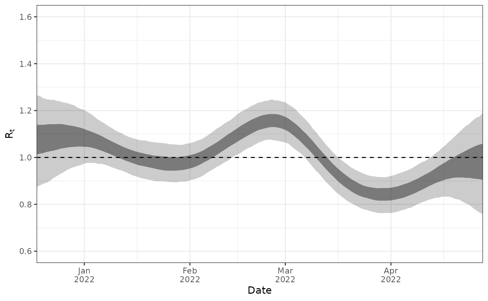

This vignette describes how to use EpiSewer in a docker container to avoid installation of CmdStan on your system. The image is available as a package from the github container registry.
Step 1: Install the EpiSewer package
Install the EpiSewer package from github as usual:
remotes::install_github("adrian-lison/EpiSewer", dependencies = TRUE)Step 2: Pull the docker image
Pull the docker image from the github container registry (make sure that your docker daemon is running!):
EpiSewer::sewer_pull_docker()Step 4: Define docker as backend
We will use this backend during model fitting as shown in step 5.
docker_backend <- model_stan_opts(use_docker = TRUE)Step 5: Fit the model with fit_opts
We here use example data and assumptions for SARS-CoV-2 in Zurich, which are included in the package.
ww_result <- EpiSewer(
data = ww_data_SARS_CoV_2_Zurich,
assumptions = ww_assumptions_SARS_CoV_2_Zurich,
fit_opts = set_fit_opts(
sampler = sampler_stan_mcmc(
iter_warmup = 500, iter_sampling = 500, chains = 4, seed = 42
),
model = docker_backend
)
)Step 6: Inspect results as usual
For example, plot the estimated reproduction number:
plot_R(ww_result)